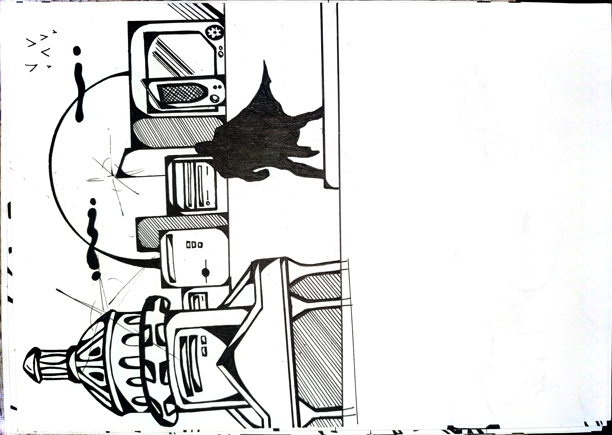
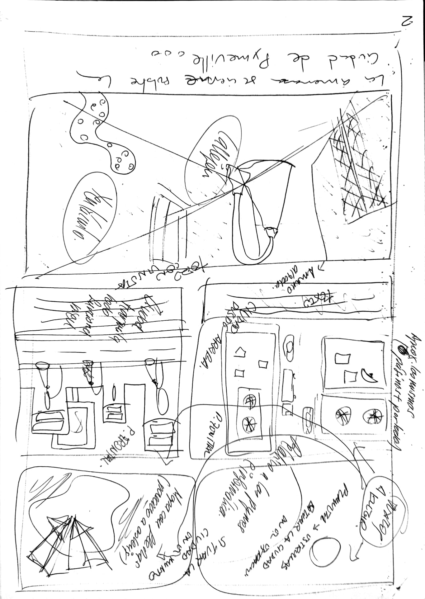
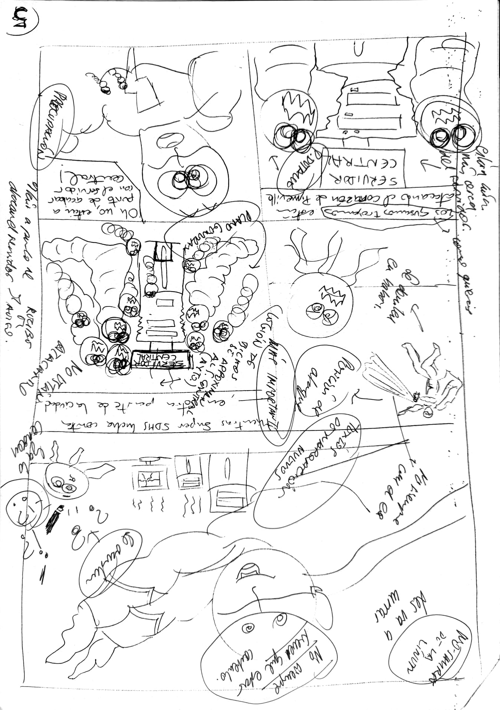
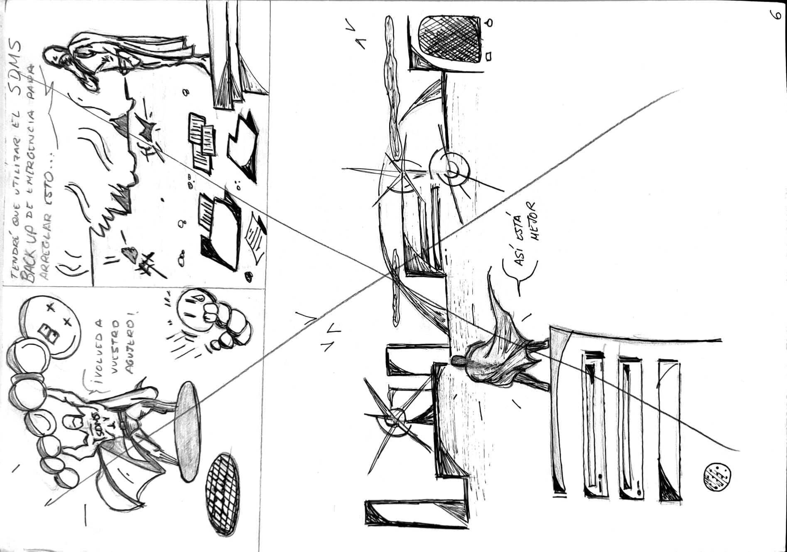
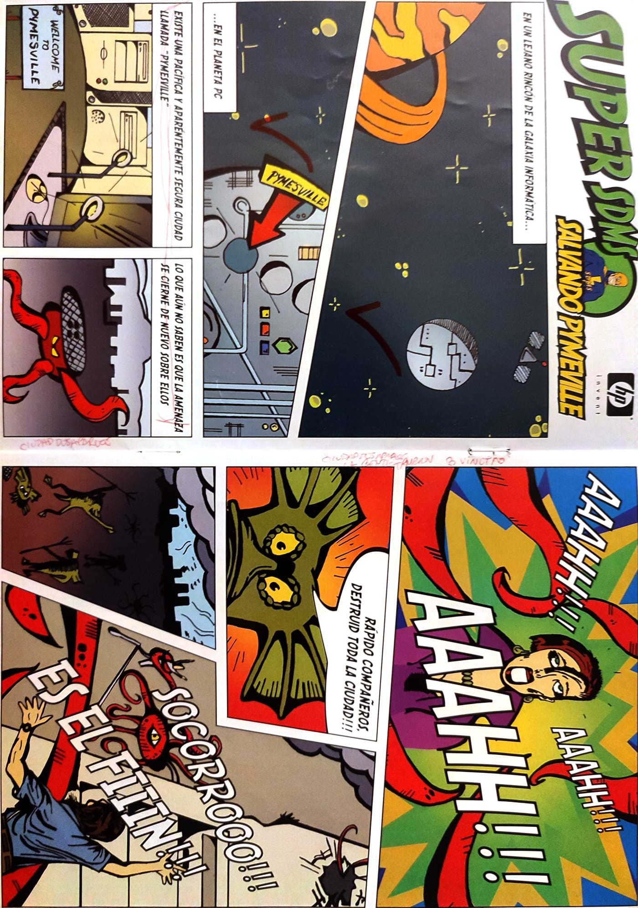
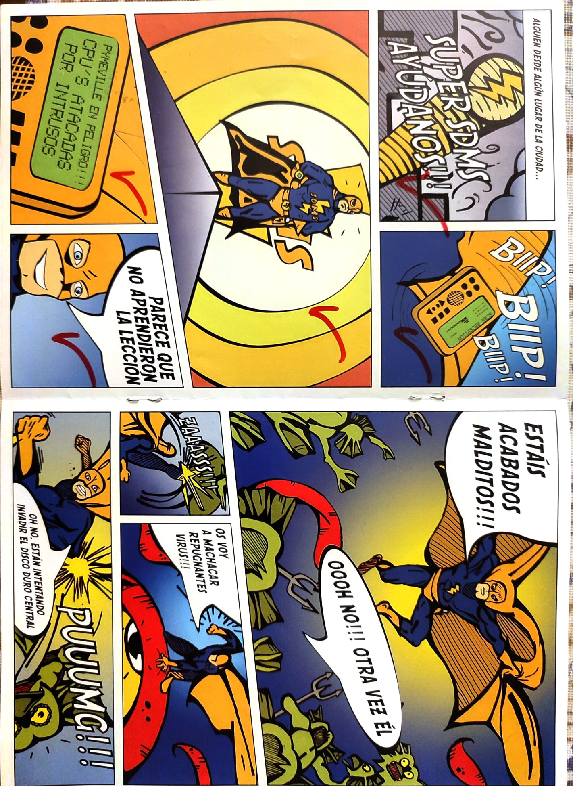
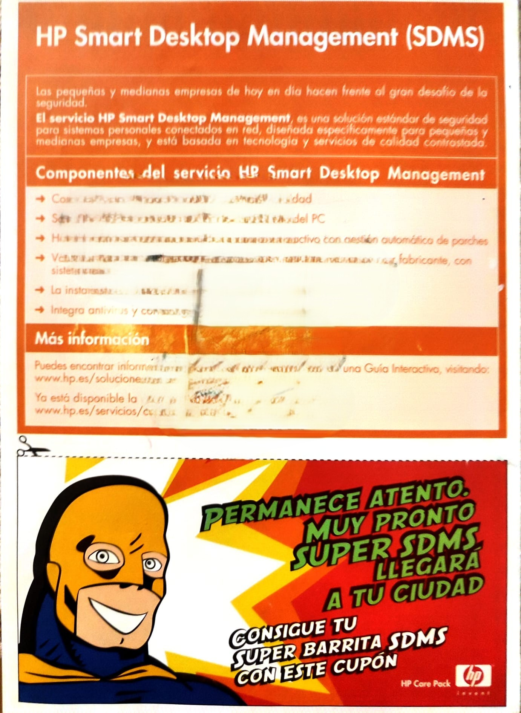

Sketches
Early ideas, page composition tests, and character design.



Super SDMS is a promotional comic project developed for Hewlett‑Packard in December 2001, focused on cybersecurity and protection against computer viruses. The goal was to communicate technical concepts in a visual, fast, and appealing way, using a superhero-inspired style with vibrant colors and very little text to make it easy to read and instantly eye‑catching.
The comic was distributed together with promotional chocolates at two major events: the SIMO fair in Madrid and the Fira / Zoo Aquarium in Barcelona, where it received excellent feedback from professionals and visitors. Its striking aesthetics and direct narrative made it a highly effective promotional material.
The project was created by two people, each contributing 50%. I was responsible for the drawing, aesthetics, visual narrative, and composition, while the digital work and final layout were developed using tools of the time such as Dreamweaver. The process combined hand‑drawn artwork, scanning, digital cleanup, coloring, and final assembly.
Due to the success of the first comic, a second project was developed, this time fully web‑oriented, expanding the Super SDMS universe and adapting it to the digital formats of the early 2000s.
Early ideas, page composition tests, and character design.

Full creation process: intermediate sketches, composition tests, adjustments, and evolution leading to the final comic pages.



Finished versions of the Super SDMS comic, ready for printing and exhibition.


